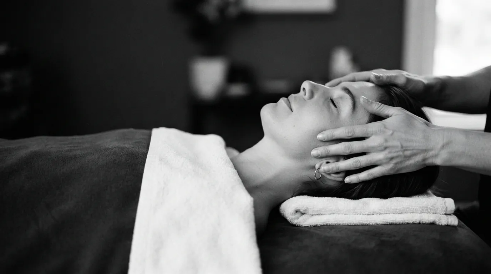

Массаж лица · Прага 4
Лифтинг-массаж лица в Праге
Интенсивная подтягивающая техника, работающая против гравитации. Укрепляет овал, приподнимает уголки губ и возвращает лицу свежесть - без игл и без единого дня восстановления.
Что такое лифтинг-массаж лица
Лифтинг-массаж лица построен на движениях, направленных исключительно вверх. Если обычный массаж прежде всего улучшает кровообращение, то лифтинг целенаправленно тонизирует мимические мышцы и меняет направление, в котором держится ткань - поэтому его называют неинвазивной подтяжкой.
Он сочетает более глубокую работу с мышцами и быстрые подтягивающие движения вдоль овала, челюсти и скул. Результат - заметно приподнятое лицо, более чёткая линия челюсти и открытый взгляд уже после первой процедуры.
Как проходит процедура
- Очищение кожи Снимаю макияж и подготавливаю кожу лёгким маслом, чтобы движения скользили.
- Тонизация мимических мышц Короткие пружинящие движения будят мышцы, потерявшие тонус.
- Подтягивающие движения Ритмичные движения вверх вдоль челюсти, скул и висков. Основа всей процедуры.
- Фиксация и отдых Завершающие охлаждающие движения закрепляют результат и успокаивают кожу.
Эффект лифтинг-массажа
- мгновенная подтяжка и укрепление овала лица
- более чёткая линия челюсти и менее тяжёлые щёки
- приподнятые уголки губ и открытый взгляд
- разглаживание мелких морщин вокруг глаз
- свежая, наполненная кровью и сияющая кожа
- заметный эффект уже после одной процедуры
Кому подходит
Лифтинг-массаж лица идеален, если овал поплыл, нужен быстрый заметный эффект перед событием или вы ищете альтернативу инъекциям. Отлично работает и как регулярная профилактика старения кожи после тридцати.
Когда массаж не проводится
- активное акне, герпес или воспаления на коже
- недавно введённые филлеры или ботокс (подождите 2–3 недели)
- сразу после химического пилинга или лазера
- розацеа в острой фазе
- высокая температура и острые заболевания
Сомневаетесь? Позвоните мне до записи по номеру +420 721 761 411, и мы всё обсудим.
Цена лифтинг-массажа
Частые вопросы
Сколько держится эффект лифтинг-массажа?
После одной процедуры подтяжка обычно держится три-пять дней. После курса из 8–10 сеансов эффект сохраняется несколько недель, а овал остаётся более плотным надолго.
За сколько дней до события записаться?
Оптимально за один-два дня. Сразу после массажа кожа слегка разрумянена, а за ночь результат прекрасно закрепляется.
Заменяет ли лифтинг-массаж ботокс?
Не заменяет, но решает другую задачу. Ботокс блокирует мышцу, а массаж, наоборот, тонизирует её и приподнимает ткань. Многие клиентки сочетают оба метода с интервалом.
Чем он отличается от миофасциального массажа?
Лифтинг-массаж быстрее, работает ближе к поверхности и нацелен на мгновенный видимый эффект. Миофасциальный идёт глубже в фасции и работает медленнее, зато дольше.
Подходит ли он после сорока?
Да, и часто именно тогда он наиболее эффективен. Но чем раньше начать курс, тем лучше держится результат.
Запишитесь на лифтинг-массаж
Студия находится в Праге 4 - Нусле, недалеко от Панкраца и Вышеграда. Запись онлайн займёт минуту.
Другие массажи лица
Как нас найти
Děkanská vinice I 819/16, 140 00 Praha 4 - Nusle
Часы работы: Вт, Чт, Пт 9:00-20:00 · Сб 10:00-17:00